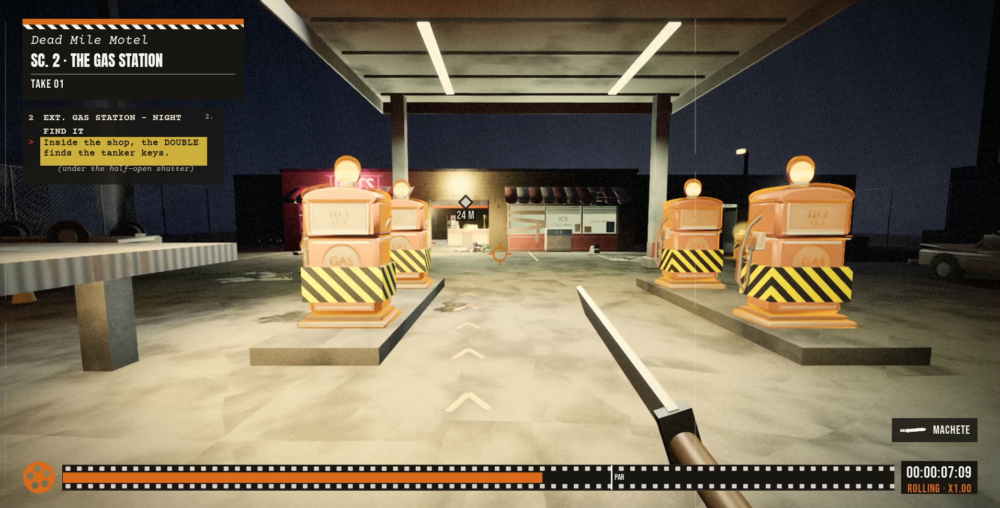
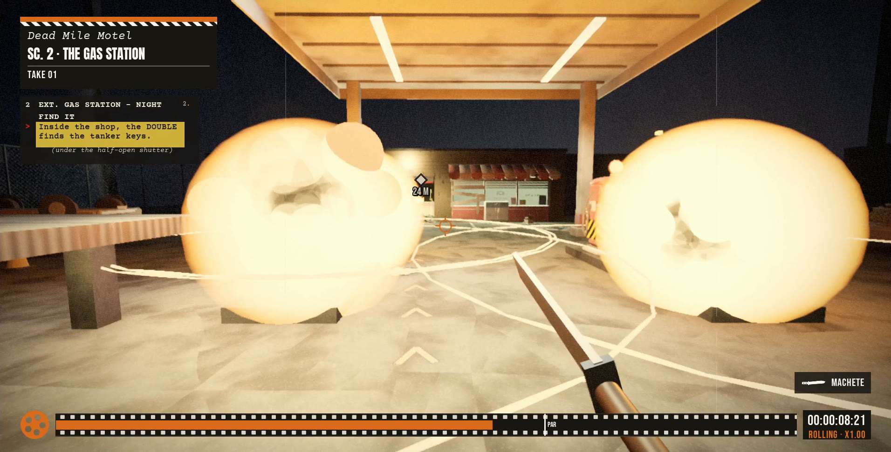
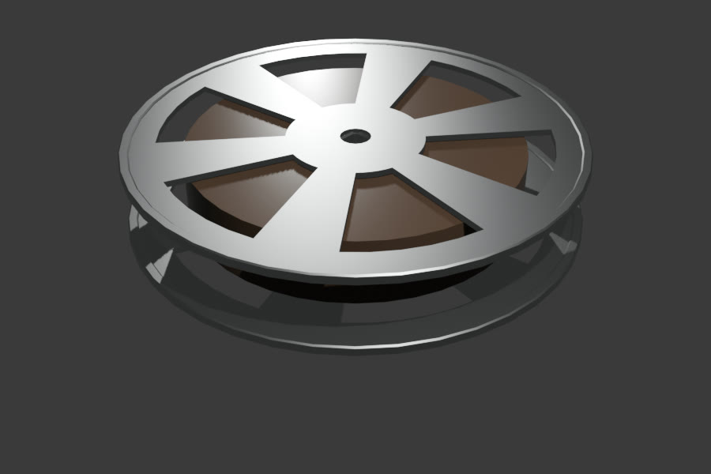

The gas pumps finally blow up on camera
The barrels and gas pumps had been rigged to explode since Friday, but no film caught one until the 01:00 reels, after a tag mix-up, a camera that cut too early and a pass to stop them reading as glowing domes.
Day 3, Sat 14 NovHour 70
In playtest five I asked for it to be "a step clearer that the barrels and gas pumps can explode". The reviewer's answer on the 21:30 reels was blunter: no explosion ever appeared on camera at all.
Why nobody had seen one
The gameplay session traced it by 22:20. Two things:
- The world kit that dressed the screen-test barrel gave it new tags, and those replaced the Explosive tag the game looks for. So the barrel was only a prop.
- The gas station film cut away before the fuse ran out.
While it was in there, gameplay added the feel an explosion should have: camera shake, a punch of the field of view, a flash and a short hit-stop.
Then they looked like light bulbs
The 23:30 refilm had explosions, but the Director's review called them "a light dome": smooth, glowing spheres with nothing left behind. Overnight the world session added hazard stripes and a 1 Hz pulse so the pumps read as dangerous before you shoot them, and gameplay-3 made every blast leave a charred husk behind.


BeforeAfterThe 02:25 review passed it: "Z1 pumps chain 6.4-7.6 s with husks." It's still not finished. The fireballs are still smooth domes, because gameplay-3's proper fire effect (flame, chunks, a smoke column) missed this build, and the pumps don't pulse in this film yet (world has the fix in). Both go in the next window.
And the reel isn't a cylinder any more

The same review passed the reel in the player's hand. A yellow glow over the floor pickup spoils the in-game shot, so the in-game reel waits for a cleaner film.